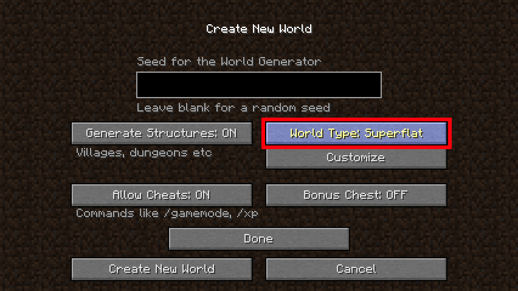
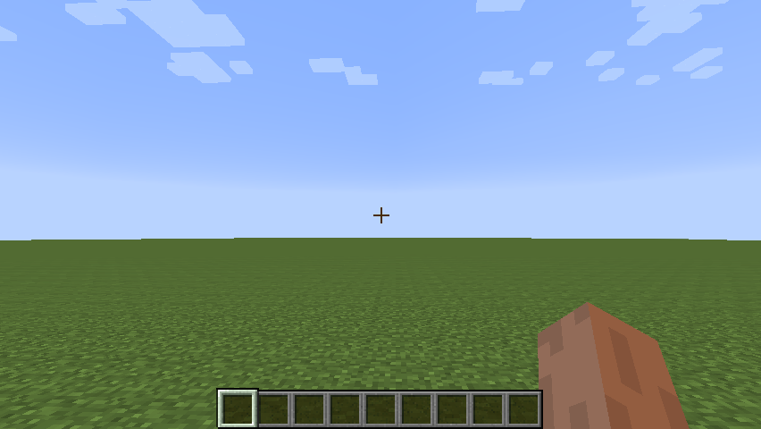

Objective
You will use the Minecraft Forge client as your primary codebase for your Minecraft project. The Forge codebase, like the rest of Minecraft, is written in Java. As a bonus, you can change Minecraft and add to it as you wish — a process known as "modding".
In this lab, you will:
- Install the TEALS Minecraft Forge project, which will form the basis for the rest of your Minecraft coding.
- Create a single player Minecraft World and familiarize yourself by playing with it.
Tasks
Part 1 — Set Up Your Development Environment
Your instructor will tell you where to find your Minecraft project. Run the "Minecraft Client" configuration. If everything is properly set up, you should see the Minecraft client splash screen after several seconds.
Part 2 — Play Minecraft
- At the splash screen, select "Singleplayer".

- Click "Create New World".

- Name your new Minecraft world "Mod World".
- Click the Game Mode button until it reads "Game Mode Creative".
- Click the "Create New World" button at the bottom left of the screen to
create the new world and launch it.

- Walk around and get used to the movement controls
(including: w a s d
). - Break multiple blocks (left mouse button).
- Open your inventory (e) and fill your hotbar with multiple items of different kinds in different tabs.

- Place multiple blocks (select block, place with right mouse button).
- Find an egg in the miscellaneous section of your inventory to spawn an entity, right click and place the entity on the world.

- Get familiar with the game for the rest of the class period, experiment!
- If you're already familiar with Minecraft, help out others in the class if they need it.
- Have fun!
- When you're done playing, hit the escape (Esc) key, and then hit the "Save and Quit to Title" button. This will save your world state and take you back to the Minecraft splash screen. From there you can simply close the window.

Part 3 — Create Superflat World
It's often useful to test out your new features in a flat world where there's plenty of room. This last little task will guide you through creating this world.
- At the splash screen, select Singleplayer.
- Hit the Create New World button.
- Enter the World Name "Flat World".
- Click the Game Mode button until it reads "Game Mode Creative".
- Click the More World Options… button to bring up the options window.

- Click the Generate Structures button until it reads "Generate Structures: OFF".
- Click the World Type button until it reads "World Type: Superflat". 
- Finally, click the "Create New World" button to create the new flat world. This will immediately launch a new game in flat world. 
- As above, to save your world state and exit: hit the escape key, hit the Save and Quit to Title button, and close the window.
Part 4 — Tuning Minecraft
If the game runs smoothly without glitches or other issues, then no further tuning is needed. However, if the game is not running smoothly, there are a number of client options you can tweak to reduce the load on your machine.
These settings are found from the main splash screen or from the in-game pause screen
(hit the Esc key to show this). Press the 'Options…' button, followed by the
'Video Settings…' button:


- Render Distance — This setting has a profound effect on game performance. It specifies how much of the world is rendered at far distances. The default is 12 render chunks. (A render chunk is a 16×16×16 volume of blocks.) If your game performance is poor, slowly reduce this value by 1 and test the impact each time. Reducing this distance will quickly reduce the number of blocks that the game has to render for each frame. The end effect is that the world will fade into the fog closer than before, so you can't see as far — which means less work for the renderer and block manager.
- Graphics — The graphics setting can be set to Fancy or Fast. Setting this to Fast may be enough to get good performance.
- Smooth Lighting — The kind of lighting used to render the graphics in he game will affect how much work is done to render each object in the game. The settings are Off, Minimum, and Maximum. The higher the setting, the greater the load and the prettier the world.
- Particles — You can adjust the number of particles rendered in the game for various effects (for example, sparkles, or explosions). From most CPU intensive to least, the settings are All, Decreased, and Minimal.
- Clouds — Turning these off may give you the performance boost you need, though it's unlikely.
The trick to adjusting these settings is to balance them in order to get the best game performance possible while also having it look good.
Minecraft Cheat Sheet
Movement
| w | move forward (double-tap to sprint) |
| a | move left |
| s | move backwards |
| d | move right |
| <space> | jump (if flying, move upwards). You can hold down <space> while moving to climb up hills |
| <left shift> | sneak |
| <space><space> | fly |
| <shift> | move downwards when flying |
Inventory
| e | Open inventory |
| 1-9 | select specified inventory item in hotbar |
| mouse wheel | scroll to select an inventory item in hotbar |